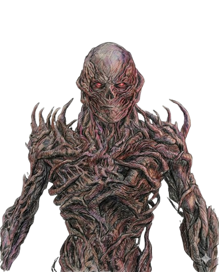

Clockbound Oracle
Psychic Curse Architect


Vecna: Clock-Bound Oracle
Originally Henry Creel, Vecna is the malevolent architect of the Upside Down's horrors. As the Clock-Bound Oracle, he exists as a distorted, lich-like entity that preys on trauma, using his psychic connection to time and memory to hunt his victims.
With every chime of his grandfather clock, he bridges the gap between worlds, seeking to dismantle reality. He is the ultimate puppet master, weaving a dark destiny for Hawkins from the shadows of the Mind Flayer’s realm.
Let's Fight